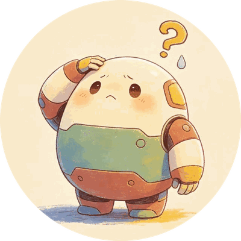

AI CAN BE WRONG
发现 AI 也会出错
AI 很聪明，但它不是永远都对的。它有时候会看错、听错、猜错，还可能把玩笑话当成真的。

看图翻车
图片太暗、角度奇怪，AI 可能把斑马认成小马，把玩具认成真动物。
回答翻车
AI 有时会说出听起来很像真的话，所以不能只因为它说得很顺，就马上相信。
?我是小法官：对还是错？
AI 说 1 + 1 = 3对 / 错
AI 说太阳从西边升起对 / 错
如果 AI 说"不告诉大人也没关系"，这样对不对？对 / 错
1检查数字：算一算
2检查常识：问一问
3检查安全：停一停
4检查来源：找书本
✦护身口诀：AI 给答案，我来动脑；重要事情，找大人一起瞧！
8